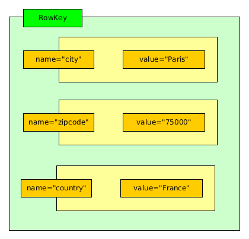
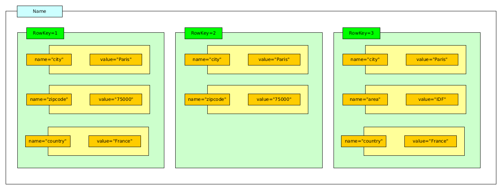
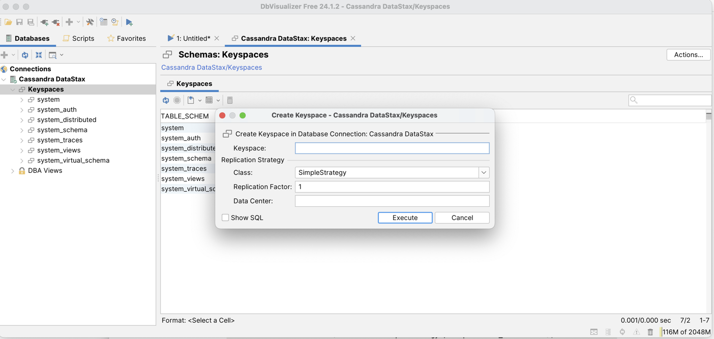
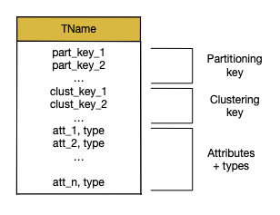
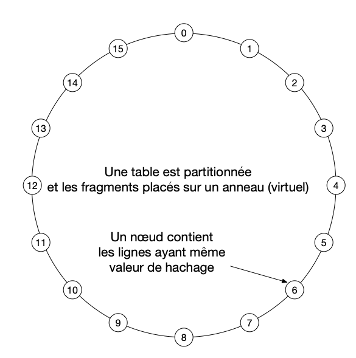
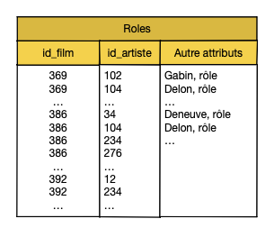
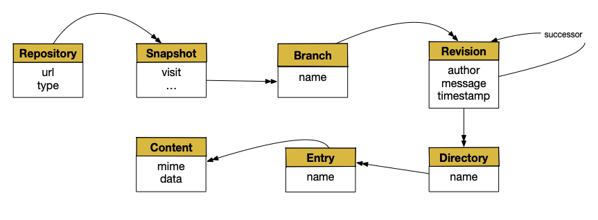

Etude de cas: Cassandra¶
S1: Cassandra, une base relationnelle étendue¶
Supports complémentaires
Cassandra est un système de gestion de données à grande échelle conçu à l’origine (2007) par les ingénieurs de Facebook pour répondre à des problématiques liées au stockage et à l’utilisation de gros volumes de données. En 2008, ils essayèrent de le démocratiser en founissant une version stable, documentée, disponible sur Google Code. Cependant, Cassandra ne reçut pas un accueil particulièrement enthousiaste. Les ingénieurs de Facebook décidèrent donc en 2009 de faire porter Cassandra par l’Apache Incubator. En 2010, Cassandra était promu au rang de top-level Apache Project.
Apache a joué un rôle de premier plan dans l’attraction qu’a su créer Cassandra. La communauté s’est tellement investie dans le projet Cassandra que, au final, ce dernier a complètement divergé de sa version originale. Facebook s’est alors résolu à accepter que le projet - en l’état - ne correspondait plus précisément à leurs besoins, et que reprendre le développement à leur compte ne rimerait à rien tant l’architecture avait évolué. Cassandra est donc resté porté par l’Apache Incubator.
Aujourd’hui, c’est la société Datastax qui assure la distribution et le support de Cassandra qui reste un projet Open Source de la fondation Apache.
Cassandra a beaucoup évolué depuis l’origine, ce qui explique une terminologie assez erratique qui peut prêter à confusion. L’inspiration initiale est le système BigTable de Google, et l’évolution a ensuite plutôt porté Cassandra vers un modèle tendant vers le relationnel, avec quelques différences significatives, notamment sur les aspects internes. C’est un système NoSQL très utilisé, et sans doute un bon point de départ pour passer du relationnel à un système distribué.
Le modèle de données¶
Cassandra est un système qui s’est progressivement orienté vers un modèle relationnel étendu, avec typage fort et schéma contraint. Initialement, Cassandra était beaucoup plus permissif et permettait d’insérer à peu près n’importe quoi.
Note
Méfiez-vous des « informations » qui trainent encore sur le Web, où Cassandra est par exemple qualifié de « column-store, avec une confusion assez générale due en partie aux évolutions du système, et en partie au fait que certains se contentent de répéter ce qu’ils ont lu quelque part sans se donner la peine de vérifier ou même de comprendre.
Comme dans un système relationnel, une base de données Cassandra est constituée de tables. Chaque table a un nom et est constituée de colonnes. Toute ligne (row) de la table doit respecter le schéma de cette dernière. Si une table a 5 colonnes, alors à l’insertion d’une entrée, la donnée devra être composée de 5 valeurs respectant le typage. Une colonne peut avoir différents types,
des types atomiques, comme par exemple entier, texte, date;
des types complexes (ensembles, listes, dictionnaires);
des types construits et nommés.
Cela vous rappelle quelque chose? Nous sommes effectivement proche d’un modèle de documents structurés de type JSON, avec imbrication de structures, mais avec un schéma qui assure le contrôle des données insérées. La gestion de la base est donc très contrainte et doit se faire en cohérence avec la structure de chaque table (son schéma). C’est une différence notable avec de nombreux systèmes NoSQL.
Important
Le vocabulaire encore utilisé par Cassandra est hérité d’un historique complexe et s’avère source de confusion. Ce manque d’uniformité et de cohérence dans la terminologie est malheureusement une conséquence de l’absence de normalisation des systèmes dits « No-SQL ». Dans tout ce qui suit, nous essayons de rester en phase avec les concepts (et leur nommage) présentés dans ce cours, d’établir le lien avec le vocabulaire Cassandra et si possible d’expliquer les raisons des écarts terminologiques. En particulier, nous allons utiliser document comme synonyme de row Cassandra, pour des raisons d’homogénéïté avec le reste de ce cours.
Paires clé/valeur (columns) et documents (rows)¶
La structure de base d’un document dans Cassandra est la paire (clé, valeur), autrement dit la structure atomique de représentation des informations semi-structurées, à la base de XML ou JSON par exemple. Une valeur peut être atomique (entier, chaîne de caractères) ou complexe (dictionnaire, liste).
Vocabulaire
Dans Cassandra, cette structure est parfois appelée colonne, ce qui est difficilement explicable au premier abord (vous êtes d’accord qu’une paire-clé/valeur n’est pas une colonne?). Il s’agit en fait d’un héritage de l’inspiration initiale de Cassandra, le système BigTable de Google dans lequel les données sont stockées en colonnes. Même si l’organisation finale de Cassandra a évolué, le vocabulaire est resté. Bilan: chaque fois que vous lisez « colonne » dans le contexte Cassandra, comprenez « paire clé-valeur » et tout s’éclaircira.
Versions
Il existe une deuxième subtilité que nous allons laisser de côté pour l’instant: les valeurs dans une paire clé-valeur Cassandra sont associées à des versions. Au moment où l’on affecte une valeur à une clé, cette valeur est étiquetée par l’estampille temporelle courante, et il est possible de conserver, pour une même clé, la série temporelle des valeurs successives. Cassandra, à strictement parler, gère donc des triplets (clé, estampille, valeur). C’est un héritage de BigTable, que l’on retrouve encore dans HBase par exemple.
L’estampille a une utilité dans le fonctionnement interne de Cassandra, notamment lors des phases de réconciliation lorsque des fichiers ne sont plus synchronisés suite à la panne d’un nœud. Nous y reviendrons.
Un document dans Cassandra est un identifiant unique associé à un ensemble de paires (clé, valeur). Il s’agit ni plus ni moins de la notion traditionnelle de dictionnaire que nous avons rencontrée dès le premier chapitre de ce cours et qu’il serait très facile de représenter en JSON par exemple.
Vocabulaire
Cassandra appelle row les documents, et row key l’identifiant unique. La notion de ligne (row) vient également de BigTable. Conceptuellement, il n’y a pas de différence avec les documents structurés que nous étudions depuis le début de ce cours.
Dans les versions initiales de Cassandra, le nombre de paires clé-valeur constituant un document (ligne) n’était pas limité. On pouvait donc imaginer avoir des documents contenant des milliers de paires, tous différents les uns des autres. Ce n’est plus possible dans les versions récentes, chaque document devant être conforme au schéma de la table dans laquelle il est inséré. Les concepteurs de Cassandra ont sans doute considéré qu’il était malsain de produire des fourre-tout de données, difficilement gérables. La Fig. 24 montre un document Cassandra sous la forme de ses paires clés-valeurs
{kind=link}

Fig. 24 Structure d’un document dans Cassandra¶
Les tables (column families)¶
Les documents sont groupés dans des tables qui, sous Cassandra, sont parfois appelées des column families pour des raisons historiques.
Vocabulaire
La notion de column family vient là encore de Bigtable, où elle avait un sens précis qui a disparu ici (pourquoi appeler une collection une « famille de colonnes? »). Transposez column family en collection et vous serez en territoire connu. Pour retrouver un modèle encore très proche de celui de BigTable, vous pouvez regarder le système HBase où les termes column family et column ont encore un sens fort.
Note
Il existe aussi des super columns, ainsi que des super column families. Ces structures apportent un réel niveau de complexité dans le modèle de données, et il n’est pas vraiment nécessaire d’en parler ici. Il se peut d’ailleurs que ces notions peu utiles disparaissent à l’avenir.
La Fig. 25 illustre une table et 3 documents avec leur identifiant.
{kind=link}

Fig. 25 Une table (column family) contenant 3 documents (rows) dans Cassandra¶
Bases (Keyspaces)¶
Enfin le troisième niveau d’organisation dans Cassandra est le keyspace, qui contient un ensemble de tables (column families). C’est l’équivalent de la notion de base de données, ensemble de tables dans le modèle relationnel, ou ensemble de collections dans des systèmes comme MongoDB.
En résumé:
Cassandra permet de stocker des tables dénormalisées dans lesquelles les valeurs ne sont pas nécessairement atomiques; il s’appuie sur une plus grande diversité de types (pas uniquement des entiers et des chaînes de caractères, mais des types construits comme les listes ou les dictionnaires).
La modélisation d’une architecture de données dans Cassandra est beaucoup plus ouverte qu’en relationnel ce qui rend notamment la modélisation plus difficile à évaluer, surtout à long terme.
La dénormalisation (souvent considérée comme la bête noire à pourchasser dans un modèle relationnel) devient recommandée avec Cassandra, en restant conscient que ses inconvénients (notamment la duplication de l’information, et les incohérences possibles) doivent être envisagés sérieusement.
En contrepartie des difficultés accrues de la modélisation, et surtout de l’impossibilté de garantir formellement la qualité d’un schéma grâce à des méthodes adaptées, Cassandra assure un passage à l’échelle par distribution basé sur des techniques de partitionnement et de réplication que nous détaillerons ultérieurement. C’est un système qui offre des performances jugées très satisfaisantes dans un environnement Big Data.
Créons notre base¶
À vous de vous retrousser les manches pour créer votre base Cassandra et y insérer nos films (ou toute autre jeu de données de votre choix). Les commandes de base sont données ci-dessous; elles peuvent toutes être entrées directement dans client graphique comme DbVisualizer. Le keyspace ————-
Rappelons que keyspace est le nom que Cassandra donne à une base de données. Cassandra est fait pour fonctionner dans un environnement distribué. Pour créer un keyspace, il faut donc préciser la stratégie de réplication à adopter. Nous verrons plus en détail après comment tout ceci fonctionne. Voici la commande en ligne:
CREATE KEYSPACE IF NOT EXISTS Movies
WITH REPLICATION = { 'class' : 'SimpleStrategy', 'replication_factor': 3 };
Sous DbVisualizer, les keyspaces apparaissent à gauche de la fenêtre principale. Un clic bouton droit permet d’ouvrir un formulaire de création d’un keyspace (voir Fig. 26).
{kind=link}

Fig. 26 Utilisation de DbVisualizer – Création d’un keyspace¶
Une fois le keyspace créé, essayez les commandes suivantes
(sous cqlsh uniquement).
cqlsh > DESCRIBE keyspaces;
cqlsh > DESCRIBE KEYSPACE Movies;
Avec un client graphique, il est facile d’explorer un keyspace. Sous DbVisualizer, vous pouvez entrer les commandes dans une fenêtre « SQL commander ».
Important
Il peut être nécessaire de se reconnecter à Cassandra pour que le keyspace devienne visible.
Données relationnelles (à plat)¶
On peut traiter Cassandra comme une base relationnelle (en se plaçant du point de vue de la modélisation en tout cas). On crée alors des tables destinées à contenir des données « à plat », avec des types atomiques. Commençons par créer une table pour nos artistes.
create table artists (id text,
last_name text, first_name text,
birth_date int, primary key (id)
);
Je vous renvoie à la documentation Cassandra pour la liste des types atomiques disponibles. Ce sont, à peu de chose près, ceux de SQL.
L’insertion de données suit elle aussi la syntaxe SQL. Insérons quelques artistes.
insert into artists (id, last_name, first_name, birth_date)
values ('artist1', 'Depardieu', 'Gérard', 1948);
insert into artists (id, last_name, first_name, birth_date)
values ('artist2', 'Baye', 'Nathalie', 1948);
insert into artists (id, last_name, first_name)
values ('artist3', 'Marceau', 'Sophie');
On peut vérifier que l’insertion a bien fonctionné en sélectionnant les données.
select * from artists;
id | last_name | first_name | birth_date
------------+-------------+-----------------------------
'artist1' | Depardieu | Gérard | 1948
'artist2' | Baye | Nathalie | 1948
'artist3' | Marceau | Sophie | null
À la dernière insertion, nous avons délibérément omis de renseigner la colonne birth_date, et
Cassandra accepte la commande sans retourner d’erreur. Cette flexibilité est l’un des aspects
communs à tous les modèles s’appuyant sur une représentation semi-structurée.
Il est également possible d’insérer à partir d’un document JSON en ajoutant le mot-clé JSON.
insert into artists JSON '{
"id": "a1",
"last_name": "Coppola",
"first_name": "Sofia",
"birth_date": "1971"
}';
La structure du document doit correspondre très précisément (types compris) au schéma de la table, sinon Cassandra rejette l’insertion.
Note
Vous pouvez récupérer sur le site http://deptfod.cnam.fr/bd/tp/datasets/ des commandes d’insertion Cassandra pour notre base de films.
Documents structurés (avec imbrication)¶
Cassandra va au-delà de la norme relationnelle en permettant des données dénormalisées dans lesquelles certaines valeurs sont complexes (dictionnaires, ensembles, etc.). C’est le principe de base que nous avons étudié pour la modélisation de document: en permettant l’imbrication on s’autorise la création de structures beaucoup plus riches, et potentiellement suffisantes pour représenter intégralement les informations relatives à une entité.
Note
Le concept de relationnel « étendu » à des types complexes est très ancien, et existe déjà dans des systèmes comme Postgres depuis longtemps.
Prenons le cas des films. En relationnel, on aurait la commande suivante:
create table movies (id text,
title text,
year int,
genre text,
country text,
primary key (id) );
Tous les champs sont de type atomique. Pour représenter le metteur en scène, objet complexe avec un nom, un prénom, etc., il faudrait associer (en relationnel) chaque ligne de la table movies à une ligne d’une autre table représentant les artistes.
Cassandra permet l’imbrication de la représentation d’un artiste dans la représentation d’un film; une seule table suffit donc. C’est le principe de dénormalisation: on regroupe les données le plus possible dans des lignes pour éviter les jointures. Une valeur d’attribut peut correspondre:
à un ensemble de valeurs (non ordonnées):
SETà une liste de valeurs:
LISTà un dictionnaire:
MAPà un nuplet: TUPLE`
à une instance d’un type
Définissons le type artist de la manière suivante:
create type artist (id text,
last_name text,
first_name text,
birth_date int,
role text);
Et on peut alors créer la table movies en spécifiant que l’un des champs a pour type
artist.
create table movies (id text,
title text,
year int,
genre text,
country text,
director frozen<artist>,
primary key (id) );
Notez le champ director, avec pour type frozen<artist> indiquant l’utilisation d’un
type défini dans le schéma.
Note
L’utilisation de frozen semble obligatoire pour les types imbriqués. Les raisons
sont peu claires pour moi. Il semble que frozen implique que toute modification de la
valeur imbriquée doive se faire par remplacement complet, par opposition à une modification
à une granularité plus fine affectant l’un des champs. Vous êtes invités à creuser
la question si vous utilisez Cassandra.
Il devient alors possible d’insérer des documents structurés, comme celui de l’exemple ci-dessous. Ce qui montre l’équivalence entre le modèle Cassandra et les modèles des documents structurés que nous avons étudiés. Il est important de noter que les concepteurs de Cassandra ont décidé de se tourner vers un typage fort: tout document non conforme au schéma précédent est rejeté, ce qui garantit que la base de données est saine et respecte les contraintes.
INSERT INTO movies JSON '{
"id": "movie:1",
"title": "Vertigo",
"year": 1958,
"genre": "drama",
"country": "USA",
"director": {
"id": "artist:3",
"last_name": "Hitchcock",
"first_name": "Alfred",
"birth_date": "1899"
}
}';
Sur le même principe, on peut ajouter un niveau d’imbrication pour représenter
l’ensemble des acteurs d’un film. Le constructeur set<...> déclare un type ensemble.
Voici un exemple parlant:
create table movies (id text,
title text,
year int,
genre text,
country text,
director frozen<artist>,
actors set< frozen<artist>>,
primary key (id) );
Les acteurs sont donc une liste d’instances du type artist, ce qui correspond
en JSON à la structure suivante:
insert into movies JSON '{
"id": "movie:11",
"title": "Star Wars",
"year": 1977,
"genre": "Adventure",
"country": "US",
"director": {
"id": "artist:1",
"last_name": "Lucas",
"first_name": "George",
"birth_date": 1944
},
"actors": [
{
"last_name": "Hamill",
"first_name": "Mark",
"birth_date": 1951
},
{
"last_name": "Ford",
"first_name": "Harrison",
"birth_date": 1942
},
{
"last_name": "Fisher",
"first_name": "Carrie",
"birth_date": 1956
}
]
}';
Je vous laisse effectuer (si ce n’est déjà fait) l’insertion de l’ensemble des films tels qu’ils sont fournis par le site http://deptfod.cnam.fr/bd/tp/datasets/cassandra, avec tous les acteurs d’un film. Il suffit de récupérer le fichier contenant l’ensemble des commandes d’insertion et de l’exécuter comme un script. Nous nous en servirons pour l’interrogation CQL ensuite.
En résumé:
Cassandra propose un modèle relationnel étendu, basé sur la capacité à imbriquer des types complexes dans la définition d’un schéma, et à sortir en conséquence de la première règle de normalisation (ce type de modèle est d’ailleurs appelé depuis longtemps N1NF pour Non First Normal Form);
Cassandra a choisi d’imposer un typage fort: toute insertion doit être conforme au schéma;
L’imbrication des constructeurs de type, notamment les dictionnaires (nuplets) et les ensembles (set) rend le modèle comparable aux documents structurés JSON ou XML.
Il faut noter que les ensembles doivent rester de taille raisonnable sous peine de dégrader les performances. La conception d’un schéma Cassandra repose sur des principes très spécifiques sur lesquels nous revenons plus loin.
S2: requêtes Cassandra¶
Supports complémentaires
Cassandra propose un langage, nommé CQL, inspiré de SQL, mais fortement restreint par l’absence de jointure. De plus, d’autres types de restrictions s’appliquent, motivées par l’hypothèse qu’une base Cassandra est nécessairement une base à très grande échelle, et que les seules requêtes raisonnables sont celles pour lequelles la structuration des données permet des temps de réponse acceptables.
Note
Cette session est une démonstration pratique ces capacités d’interrogation
de Cassandra. Si vous souhaitez reproduire les manipulations, il vous
faut un environnement constitué d’un serveur Cassandra,
d’un client et de la base de données des films. En résumé, vous devriez avoir
une table movies où chaque film contient des données imbriquées représentant
le réalisateur du film et les acteurs.
CQL, un sous-ensemble de SQL¶
CQL ne permet d’interroger qu’une seule table. Cette (très forte) restriction
mise à part (!), le
langage est délibérement conçu comme un sous-ensemble de SQL et de sa construction
select from where.
Note
Toute requête CQL doit se terminer par un “;”
Commençons par quelques exemples.
Sélectionnons tous les films.
select * from movies;
Selon l’utilitaire que vous utilisez, vous devriez obtenir l’affichage des premiers films sous une forme ou sous une autre. Cassandra étant supposé gérer de très grandes bases de données, ces utilitaires vont souvent ajouter automatiquement une clause limitant le nombre de lignes retournées. Vous pouvez ajouter cette clause explicitement.
select * from movies limit 20;
On peut obtenir le résultat encodé en JSON en ajoutant simplement le mot-clé JSON.
select JSON * from movies;
Bien entendu, le * peut être remplacé par la liste des attributs à conserver (projeter).
select title from movies;
Si une valeur v est un dictionnaire (objet en JSON), on peut accéder à l’un de ses composants c avec la notation v.c. Exemple pour le réalisateur du film.
select title, director.last_name from movies;
En revanche, quand la valeur est un ensemble ou une liste, on ne sait pas avec CQL accéder à son contenu. La tentative d’exécuter la requête:
select title, actors.last_name from movies;
devrait retourner une erreur. Il est vrai que l’on ne sait pas très bien à quoi devrait ressembler le résultat. Ou plus exactement on le sait, mais cela supposeait que Cassandra soit capable de créer des types à la volée. D’autres langages (notamment XQuery, mais également le langage de script Pig que nous étudierons en fin de cours) proposent des solutions au problème d’interrogation de collections imbriquées. Il se peut que CQL évolue un jour pour proposer quelque chose de semblable.
On peut, dans la clause select, appliquer des fonctions. Cassandra
permet la définition de fonctions
utilisateur, et leur application aux données grâce à CQL. Quelques fonctions prédéfinies sont
également disponibles. Voici un exemple (sans intérêt autre qu’illustratif)
de conversion de l’année du film
en texte (c’est un entier à l’origine).
select cast(year as text) as yearText from movies ;
Notez le renommage de la colonne avec le mot-clé as. Tout cela est directement
emprunté à SQL. On peut également compter le nombre de lignes dans la table.
select count(*) from movies ;
On peut effectuer des filtrages avec la clause where. Par exemple:
select * from movies where id='movie:33';
Remarque importante: le critère de sélection porte ici sur la clé. On peut
généraliser à plusieurs valeurs avec la clause in.
select * from movies
where id in ('movie:33', 'movie:44214', 'movie:29845');
Tentons maintenant une recherche sur un attribut non-clé.
select * from movies
where title='Elle' ;
Vous devriez obtenir un rejet de cette requête avec le message suivant:
Unable to execute CQL script. Cannot execute this query as it might involve data
filtering and thus may have unpredictable performance. If you want
to execute this query despite the performance unpredictability,
use ALLOW FILTERING.
En revanche, en ajoutant l’option ALLOW FILTERING, on obtient le résultat.
select * from movies
where title='Elle'
ALLOW FILTERING;
Nous avons atteint les limites de CQL en tant que clône de SQL.
Pourquoi CQL n’est pas SQL¶
Pourquoi un where sur un attribut non-clé est-il rejeté? Pour une raison qui tient
à l’organisation des données: Cassandra organise une table selon une structure
qui permet très rapidement de trouver un document par sa clé. La recherche par clé
est donc autorisée. Pour aller plus loin, il faut regarder plus en détail
le schéma d’une table. La syntaxe complète est ci-dessous:
create table Tname (
part_key_1 type,
part_key_2 type,
... type,
clust_key_1 type,
... type,
att_1 type,
att_2 type,
... type,
primary key (
(part_key_1, part_key2, ...),
(clust_key_1, clust_key_2, ...)
)
)
{kind=link}

Fig. 27 Le schéma d’une table, avec la structure d’une clé¶
Les attributs d’un schéma peuvent être divisés en deux parties: les attributs de la clé et les attributs non-clés. Mais les attributs de la clé eux-mêmes se divisent en deux (Fig. 27):
les attributs de partitionnement: ils déterminent le placement de la ligne sur un serveur
les attributs de regroupement: ils servent à trier les lignes sur un même serveur.
Il faut ici anticiper un peu sur l’étude de Cassandra comme système distribué. Sans entrer dans les détails, une table Cassandra est censée être très volumineuse. Cassandra la découpe en fragments et place chaque fragment sur un des serveurs du système distribué (Fig. 28). Ce système a la forme d’un anneau mais nous allons laisser de côté cette caractéristique pour l’instant.
{kind=link}

Fig. 28 Cassandra est un système distribué: la clé de partitionnement détermine le serveur¶
Le contenu d’un fragment est déterminé par la clé de partitionnement. Pour chaque ligne on applique en effet une fonction (de hachage) aux valeurs de la clé de partitionnement. La valeur retournée par cette fonction détermine le placement dans le système distribué. Conséquence: une requête incluant comme critère une clé de partitionnement ne concerne qu’un seul serveur.
De plus, dans un fragment (sur un serveur) les lignes sont triées sur la clé primaire. Pour une même valeur de partitionnement, les lignes sont donc consécutives et ordonnées sur la clé de regroupement. Une requête sur une préfixe de la clé primaire (part. + regroupement) correspond à un parcours séquentiel sur un seul nœud, beaucoup plus efficace qu’une recherche aléatoire.
Prenons un exemple concret: nous considérons que l’ensemble imbriqué
des acteurs d’un film est potentiellement trop grand pour l’imbriquer
dans la table movies. On peut alors créer une table roles comme suit:
create table Roles (
id_film int,
id_artiste int,
role text,
artist frozen<artist>,
primary key (id_film, id_artiste)
)
La clé de partitionnement est donc l’identifiant du film, et la clé de regroupement l’identifiant de l’artiste. Tous les rôles d’un même film seront sur le même serveur. Ils seront de plus regroupés et triés par identifiant d’artiste.
{kind=link}

Fig. 29 Cassandra est un système distribué: la clé de partitionnement détermine le serveur¶
Toute recherche sur un autre attribut (par exemple l’intitulé du rôle ou le nom de l’artiste) n’a d’autre solution que de parcourir séquentiellement toute la table en effectuant le test sur le critère de recherche à chaque fois.
Comme déjà indiqué, Cassandra est conçu pour de très grandes bases de données, et le rejet de ces requêtes séquentielle est une précaution. Le message indique clairement à l’utilisateur que sa requête est susceptible de prendre beaucoup de temps à s’exécuter. À l’usage on décrouvre tout un ensemble de restrictions (par rapport à SQL) qui s’expliquent par cette volonté d’éviter l’exécution d’une requête qui impliquerait un parcours de tout ou partie de la table. Voyons quelques exemples, avec explications.
Tentons une requête sur la clé primaire, mais avec un critère d’inégalité.
select * from movies
where id > '000000';
On obtient un rejet avec un message indiquant que seule l’égalité est autorisée sur la clé (et d’autres détails à éclaircir ultérieurement).
Peut-on trier les données avec la clause order by? Essayons.
select * from movies order by title;
Les deux requêtes sont rejetées. Le message nous dit (à peu près) que le tri est autorisé seulement quand on est assuré que les données à trier proviennent d’une seule partition. En (un peu plus) clair: Cassandra ne veut pas avoir à trier des données provenant de plusieurs serveurs, dans un environnement distribué avec répartition d’une table sur plusieurs nœuds.
Et voilà. Cassandra interdit tout usage de CQL qui amènerait à parcourir toute la base ou
une partie non prédictible de la base pour constituer le résultat. Cette interdiction
n’est cependant pas totale. Dans le cas de la clause where, l’utilisateur
peut prendre explicitement ses responsabilités en ajoutant la clause allow filtering,
comme nous l’avons montré ci-dessus.
Si la table contient des milliards de ligne, il faudra certainement
attendre longtemps et exploiter intensivement les ressources du système pour un résultat
limité. À utiliser
à bon escient donc.
Il faut penser que le coût d’évaluation de cette requête est proportionnel à la taille de la base. Cassandra tente de limiter les requêtes à celles dont le coût est proportionnel à la taille du résultat.
Note
Cette remarque explique pourquoi la requête select * from movies;, qui
parcourt toute la base, est autorisée.
À partir du moment où on autorise explicitement le filtrage, on peut combiner plusieurs critères de recherche, comme en SQL.
select * from movies
where country='US' and year=2020 allow filtering;
Mais, si c’est pour faire du SQL, autant choisir une base relationnelle. Les restrictions de Cassandra doivent s’interpréter dans un contexte Big Data où l’accès aux données doit prendre en compte leur volumétrie (et notamment le fait que cette volumétrie impose une répartition des données dans un système distribué).
Une autre possibilité est de créer un index secondaire sur les attributs auxquels on souhaite appliquer des critères de recherche.
create index on movies(year);
Cassandra autorise alors de requêtes avec la clause where portant sur les attributs indexés.
select * from movies where year = 2020;
En présence d’un index, il n’est plus nécessaire de parcourir toute la collection. Cette option est cependant à utiliser avec prudence. En premier lieu, un index peut être coûteux à maintenir. Mais surtout sa sélectivité n’est pas toujours assurée. Ici, par exemple, un index sur l’année est probablement une très mauvaise idée. On peut estimer qu’un film sur 100 a été tourné en 1992, et à l’échelle du Big Data, ça laisse beaucoup de films à trouver, même avec l’index, et une requête qui peut ne pas être performante du tout.
S3: étude de cas: conception d’un schéma¶
Supports complémentaires
De nombreux conseils sont disponibles pour la conception d’un schéma Cassandra. Cette conception est nécessairement différente de celle d’un schéma relationnel à cause de l’absence du système de clé étrangère et de l’opération de jointure. C’est la raison pour laquelle de nombreux design patterns sont proposés pour guider la mise en place d’une architecture de données dans Cassandra qui soit cohérente avec les besoins métiers, et la performance que peut offrir la base de données. Je présente dans ce qui suit une étude de cas concrète, menée pour une entreprise souhaitant archiver des dépôts de code logiciel de type GitHub. Les principes adoptés sont largement inspirés de la documentation officielle Cassandra que vous pouvez consulter à https://cassandra.apache.org/doc/stable/cassandra/data_modeling/index.html.
Les principes¶
En l’absence de normalisation comme en relationnel, plusieurs solutions sont possibles, présentant des caractéristiques différentes en terme de capacité à satisfaire certaines requêtes. Il en résulte que le schéma est construit en fonction d’un besoin, ce qui est problématique puisque d’une part il faut garantir que ce besoin est correctement exprimé, et que d’autre part le besoin eut évoluer ou d’autres peuvent apparaître, le schéma devenant du coup obsolète. Avec un système relationnel comme MySQL, le raisonnement est opposé: la disponibilité des jointures permet de se fixer comme but la normalisation du modèle de données afin de répondre à tous les cas d’usage possibles, éventuellement de manière non optimale.
L’argument des défenseurs de Cassandra est que cette approche est acceptable pour une application de type WORM (Write Once, Read many). C’est le cas pour l’application d’archivage que nous allons étudier.
Admettons que le besoin soit bien identifié. On doit alors scénariser la séquence des requêtes transmises par l’application (en l’absence de jointure, une seule requête ne peut suffire, on effectue une requête par table). On organise alors les tables pour que chaque requête s’exécute localement et séquentiellement, avec un critère d’accès portant sur la clé. Le principe est que l’exécution d’une requête A fournit la valeur de la clé qui sert d’acès à la requête suivante.
On peut créer ponctuellement des index ou des vues matérialisées. Au pire (mais est-ce évitable?) on multiplie les organisations physiques et donc la redondance.
Les besoins¶
Nous voulons donc archiver des dépôts de données de type GitHub ou GitLab. La Fig. 30 montre notre modèle de données (simplifié). Nous avons donc des dépôts (repository), par exemple https://github.com/apache/cassandra, contenant le code d’un logiciel ou autre ressource. Pour archiver ce dépôt, on effectue périodiquement des visites (snapshot) et on capture le contenu du dépôt à la date de visite.
{kind=link}

Fig. 30 Notre modèle de données¶
La structure d’un dépôt logiciel est constituée de branches qui évoluent en parallèle les unes des autres, chaque évolution consituant une révision. Enfin, dans une révision, on stocke une arborescence de répertoire (directory) contenant des entry de plusieurs types (fichiers, ou liens, ou sous-répertoires, etc.). Dans le cas des fichiers, on stocke le contenu (content).
Le besoin consiste à explorer cette structure en partant d’un dépôt identifié par son URL. On peut vouloir connaître la liste des visites, choisir une visite et lister les branches, choisir une branche et consulter la liste des révisions. Enfin, ayant choisi une révision, on peut reconstituer l’arborescence de son contenu.
Remarquer que dans un modèle relationnel, chaque besoin correspondrait à une seule requête avec plus ou moins de jointure selon la profondeur d’exploration. Avec Cassandra, chaque besoin va correspondre à une séquence plus ou moins longue de requêtes mono-tables. Encore faut-il s’assurer que chaque requête va s’effectuer efficacement.
Schéma et requêtes¶
Prenons pour commencer l’hypothèse qu’on cherche les visites faites à un dépôt. Une première approche purement relationnelle, avec clé primaire et clé étrangère, ne fonctionne pas.
create table Repository
(repo_id uuid,
url varchar,
description text,
primary key (repo_id));
create table Visit
(visit_id uuid,
repo_id
visit_ref int,
date date,
primary key (visit_id)
);
Il faut deux requêtes (pas de jointure) pour trouver les visites faites au dépôt Cassandra. De plus aucune n’est indexée: une catastrophe dans un contexte de données massives.
select repo_id in oid
from Repository
where url ='github.com/apache/cassandra'
select * from Visit
where repo_id = oid
Cassandra refuse les deux puisqu’aucune requête n’utilise la clé comme critère !
Organisons les clés et chemins d’accès, en prenant comme principe que les
critères de recherche doivent être dans la clé. La table Repository
est identifiée par l’URL qui servira toujours de point d’accès.
create table Repository
(url varchar,
description text,
primary key (url)
);
On peut donc toujours trouver très efficacement un dépôt.
select * from Repository
where url ='github.com/apache/cassandra';
Pour trouver les visites à une URL, on peut commencer à exploiter la structure des clés et le placement physique qu’elle induit.
create table Visit_by_repository
(url_repo varchar,
visit_ref int,
date date,
primary key (url_repo,
visit_ref)
);
Notez d’abord le nommage. On ne
peut accéder (efficacement) aux visites que si on connaît l’URL qui
nous intéresse. C’est le point d’accès.
On nomme donc la table Visit_by_repository pour bien indiquer cette restriction.
Toutes les visites à un dépôt seront sur un même serveur et stockées
consécutivement. On peut alors effectuer efficacement les requêtes suivantes.
select * from repository
where url ='github.com/apache/cassandra';
select * from Visit_by_repository
where url ='github.com/apache/cassandra';
select * from Visit_by_repository
where url ='github.com/apache/cassandra'
and visit_ref < 3;
Il existe des alternatives. On peut imbriquer les
visites dans la table Repository en créant un type Visit.
create type Visit (
number int,
date_visit date)
Et en l’imbriquant dans Repository
create table Repository
(url varchar,
description text,
visites list<Visit>,
primary key (url)
)
Cette option suppose un nombre limité de visites (l’ordre de grandeur étant assez flou, quelques dizaines semble-t-il ?). On dispose alors d’une requête localisée et unique pour trouver toutes les visites d’un dépôt.
select * from Repository
where url ='github.com/apache/cassandra'
Cela permet des requêtes plus sophistiquées, comme les dépôts visités au moins 10 fois.
select * from Repository
where url ='github.com/apache/cassandra'
and count(visit.number) >= 10
Introduisons maintenant les clichés Snapshot avec comme point d’accès l’URL d’un dépôt.
create table Snapshot_by_repository
(url varchar,
snapshot_date,
snapshot_id uuid,
repo Repository,
branches map<string, uuid>,
primary key (url, snapshot_date) )
On a utilisé un structure de dictionnaire (Map) pour placer les branches, en supposant peu de branches par snapshot. On peut obtenir tous les clichés d’un dépôt.
select * from Snapshot_by_repository
where url ='github.com/apache/cassandra'
Ou tous les clichés après une date et contenant une branche master.
select * from Snapshot_by_repository
where url ='github.com/apache/cassandra'
and snapshot_date > '01-MARCH-2024'
and branches contains key 'master'
On obtient les identifiants des clichés et des branches. Maintenant, connaissant une branche, comment trouver les révisions ?
On continue la même démarche et on crée une
table Revision_by_branch. On arrive
ici à une situation épineuse: les révisions
forment un graphe (à partir d’une même
révision, chaque développeur peut en créer une nouvelle,
et les révisions peuvent être réconciliées ensuite.
On va donc représenter les parents d’une révision
(en supposant qu’il n’y en a pas des centaines,
ce qui semble raisonnable).
create table Revision_by_branch
(branch_id uuid,
revision_id uuid,
parents list<uuid>,
author varchar,
message varchar,
tstamp date,
primary key (branch_id,
revision_id)
);
Dans le cas d’un graphe, on ne peut parfois plus se contenter de faire une requête par table. Il faut accepter dans certains cas de faire une requête par nœud du graphe !
Commençons par les requêtes adaptées à la modélisation. On veut toutes les révisions d’une branche par Stefano.
select * from Revision_by_branch
where branch_id ='bxyz'
and author = 'Stefano'
Tout va bien, on reste dans le cadre des requêtes efficaces. Prenons maintenant les révisions dont un parent est la révision “abcd”.
select * from Revision_by_branch
where branch_id ='bxyz'
and parents contains 'abcd'
Ca va encore, tant que l’on connait l’identifiant de la branche. Maintenant on veut aller en sens inverse et « remonter » vers les parents et ascendants de la révision “lklklk”. On obtient la liste des parents avec la requête
select parents from Revision_by_branch
where branch_id ='bxyz'
and revision_id = 'lklklk'
Il faut ensuite effectuer une requête par parent.
Pour chaque valeur id_du_parent, on exécute:
select parents from Revision_by_branch
where branch_id ='bxyz'
and revision_id = 'id_du_parent'
Soit une requête pour chaque objet, ce qui est inadapté à un système gérant des données massives. On a peut-être intérêt dans ce cas à charger une bonne fois le graphe dans l’application.
En résumé:
La clé primaire détermine le stockage et les requêtes acceptables. La clé de partitionnement est le point d’accès, la clé de regroupement est l’identifiant relatif au point d’accès.
Il faut parfois « retourner » une clé primaire si on souhaite un accès symétrique à une table existante. Ce serait le cas par exemple si on voulait trouver toutes les révisions d’un fichier et tous les fichiers d’une révision (cf. exercice). C’est automatisable avec une vue matérialisée mais entraine une forte redondance.
L’imbrication d’ensembles ou de listes peut limiter le nombre d’étapes mais leur taille doit être restreinte, cf. exemple des branches.
La modélisation NoSQL, c’est du cas par cas, et les mêmes règles ne s’appliquent pas à tous les systèmes.
À titre d’exercice, je vous laisse compléter le schéma avec les tables permettant de stocker les répertoires, les entrées et leur contenu.
Exercices¶
Voici quelques manipulations et suggestions de recherches complémentaires.
Exercice MEP-S2-1: expérimentez CQL
À vous de jouer: reproduisez les requêtes ci-dessus sur votre base Cassandra.
Exercice Ex-S3-1: complétons le modèle GitHub
Notre schéma de l’étude de cas n’est pas fini. Nous voudrions pouvoir trouver tous les répertoires (directory) d’un dépôt pour une branche donnée.
Nous voulons également trouver toutes les entrées d’un répertoire donné.
Proposez les schémas des tables correspondant à ces besoins, et donnez les requêtes CQL correspondantes.
Question complémentaire,: comment faire pour obtenir les révisions d’un répertoire?
Correction
Les répertoires forment une structure d’arbre, donc un graphe. Pas idéal avec Cassandra.
Voici une proposition. Il existe d’autres solutions car tout dépend des besoins et des volumétries anticipées.
La table suivante intègre les enfants et parents.
create table Directory_by_revision
(revision_id uuid,
directory_id uuid,
children list<uuid>,
parent_id uuid,
primary key (revision_id, directory_id)
)
On peut naviguer vers les parent ou vers les enfants, mais avec une requête à chaque fois. Il faut de plus supposer qu’il n’y a pas trop d’enfants (sous-répertoires) sinon il faut s’en remettre à la table des entrées ci-dessous en considérant qu’un sous-répertoire est une entrée d’un type particulier.
Maintenant, connaissant une directory pour une révision donnée, je modélise les entrées.
create table Entry_by_dir
(revision_id uuid,
directory_id uuid,
entry_id uuid,
name varchar,
access_rights varchar,
primary key ( (revision_id, directory_id), entry_id)
Remarquez la clé de partitionnement composite. Toutes les entrées d’un même répertoire seront sur le même serveur, mais les répertoires d’une même révision pourront être sur des serveurs différents. Notez également qu’il y a sans doute trop d’entrées (fichiers) par répertoire pour les représenter par une liste imbriquée
On peut alors obtennir toutes les entrées d’une directory (pour une révision donnée).
select name from Entry_by_dir
where revision_id = 'a986678'
and directory_id = 'xyz'
On peut trouver une entrée dont le nom est README.md à
condition de le faire dans un répertoire spécifique.
select content_ref from Entry_by_dir
where revision_id = 'a986678'
and directory_id = 'xyz'
and name = 'README.md'
À l’inverse si je veux avoir la liste des révisions d’une directory , je dois inverser la clé.
create table Revision_by_directory
(directory_id uuid,
revision_id uuid,
children list<uuid>,
primary key (revision_id,directory_id)
)
On a une forte redondance si on veut les deux… Cette
situation peut être gérée en créant
Revision_by_directory comme une vue matérialisée
(étude complémentaire à mener si cela vous intéresse).
Exercice Ex-S3-2: déduplication
Enfin se pose la question du contenu des entrées (fichiers). Ici nous avons un problème de redondance: il s’agit de ressources souvent volumineuses, et qui ne changent souvent pas d’une révision à l’autre (et même d’une branche à l’autre). Comment éviter de dupliquer un contenu en le partageant entre des révisions et des branches? Proposez une approche avec Cassandra.
Correction
Si on veut éviter la duplication des contenus, il faut les stocker avec leur identifiant propre, sans les placer en fonction d’une branche ou d’une révision
create table Content
(content_id uuid,
raw_content bits,
primary key (content_id)
)
Dans ce cas, on modifie la table des entrées pour référencer le contenu.
create table Entry_by_dir
(revision_id uuid,
directory_id uuid,
entry_id uuid,
name varchar,
access_rights varchar,
content_id uuid,
primary key ( (revision_id, directory_id), entry_id)
On voit tout de suite le problème: en essayant d’éviter une déduplication on s’est condamné à effectuer une requête pour chaque contenu, ce qui risque d’être insupportable. Tout dépend du fait qu’on doive ou non accéder souvent aux contenus.
Exercice MEP-S2-3: sujet d’étude, les vues matérialisées
Depuis la version 3, Cassandra propose un mécanisme de vue matérialisé. Etudiez la documentation à ce sujet, et montrez comment ce mécanisme peut permettre de répondre à des requêtes comme celle de l’exercice précédent.

Ce cours de Philippe Rigaux est mis à disposition selon les termes de la licence Creative Commons Attribution - Pas d’Utilisation Commerciale - Partage dans les Mêmes Conditions 4.0 International.
Table Of Contents
- Introduction
- Préliminaires: Docker
- Modélisation de bases NoSQL
- Recherche exacte
- Etude de cas: Cassandra
- Cassandra - Travaux Pratiques
- Recherche approchée
- ElasticSearch - Travaux pratiques
- Traitements par lot
- Pig : Travaux pratiques
- Le cloud, une nouvelle machine de calcul
- Systèmes NoSQL: la réplication
- Systèmes NoSQL: le partitionnement
- Etude de cas: Apache Spark
- Annales des examens
Recherche
Saisissez un ou plusieurs mots-clés.